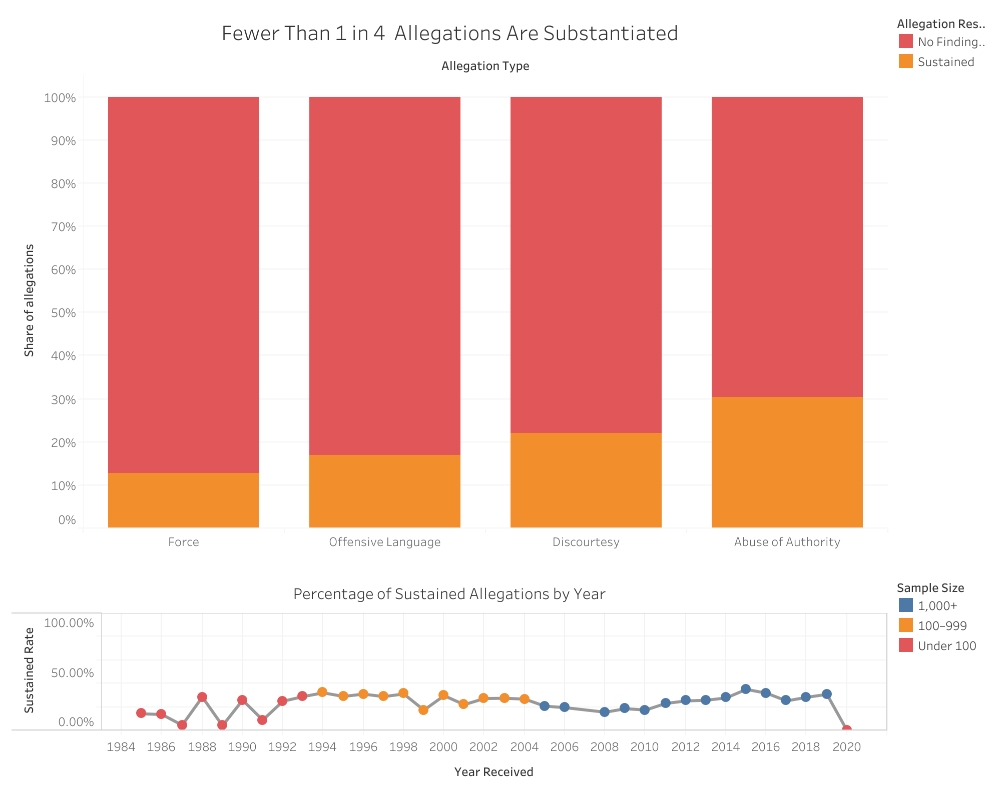
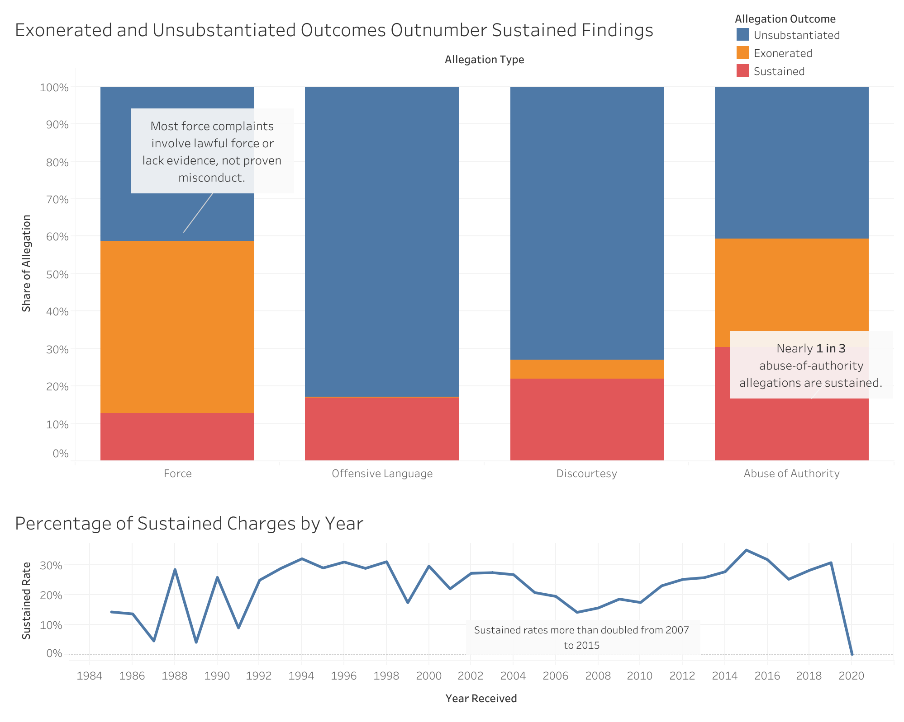

Project 2: Persuasive or Deceptive Visualization?
Matthew Perez — mep027@ucsd.edu
Dataset: Civilian Complaints Against New York City Police Officers (ProPublica / NYC Civilian Complaint Review Board).
Proposition: NYPD officers are rarely held accountable for civilian complaints.
FOR the Proposition

Most allegations close without a finding against the officer, and the share sustained has stayed low across decades.
Design Decisions and Rationale:
- Grouping exonerated and unsubstantiated into "No finding against officer" (Score: −1.5).
Combining the two outcomes makes the non-sustained share look like a single, overwhelming result. "Exonerated" (the conduct occurred but was lawful) and "unsubstantiated" (not enough evidence) mean very different things, so merging them hides that distinction. Showing these groups seperately would show more nuance and consideration towards unsubstantiated allegations.
- Coloring "No finding" red (Score: −0.5).
Red signals danger or failure, so the largest segment of each bar reads as a problem before the reader looks at the numbers. Choosing red makes these outcomes feel like wrong descisions.
- 100% stacked bars by allegation type (Score: +1.0).
Normalizing each bar to 100% lets readers compare outcome proportions across allegation types fairly, even though some types have far more allegations than others. This helps expose potenial biases in how certain allegations are handled, for example we see force allegations sustained at a ~10% rate while the average across all allegation types is ~25%.
- Title: "Fewer than 1 in 4 allegations are substantiated" (Score: −0.5).
The statistic is accurate, but "fewer than" frames it as a shortfall. The same fact could be framed as "nearly 1 in 4 are substantiated." This number is an average across all allegations.
- Sustained rate by year, with years colored by sample size (Score: +1.5).
A calculated field (substantiated allegations ÷ all allegations) shows the rate over time, and the sample-size coloring flags years with few allegations so readers don't over-read the spikes. I made the scale be out of 100% so as to show the lack of change over the decades.
AGAINST the Proposition

Most allegations are resolved after investigation, and the share sustained has grown in recent years.
Design Decisions and Rationale:
- Keeping exonerated and unsubstantiated as separate outcomes (Score: +1.5).
Separating them shows that a large share of force allegations were investigated and found lawful, which is a different result from a lack of evidence.
- Annotation: "Most force complaints involve lawful force or lack evidence, not proven misconduct" (Score: −0.5).
The annotation is accurate, but it groups "lacks evidence" with "lawful," nudging readers to treat unsubstantiated cases as if no misconduct occurred.
- Title: "Exonerated and Unsubstantiated Outcomes Outnumber Sustained Findings" (Score: −0.5).
Leading with "exonerated" puts the idea of innocence first, while the sentence itself stays technically neutral.
- Color palette (Score: +0.5).
I decdied to change the outcome color pallete here, focusing on more neutral colors and leaving red be the smallest catergory giving a more neautral read of each catergory.
- Line chart time range and annotation (Score: -1.5).
I highlighted the rise in sustained rates from 2007 to 2015. I chose this start year as the NYPD saw a drastic increase in complaints, bringing the sustained rate average down before it rebounded for a while.
Final Reflection
[EDIT, paragraph 1: Describe your design process across both visualizations. What was straightforward or difficult? For example, how the same three outcome categories told opposite stories depending on how you grouped and colored them.]
[EDIT, paragraph 2: What surprised you? For example, how much the word "accountable" can mean "found guilty" or "fairly investigated," or how a single choice like sample-size coloring could be earnest or persuasive depending on which years it highlighted.]
[EDIT, paragraph 3: How do you now define "ethical analysis and visualization"? Where would you draw the line between acceptable persuasive choices and misleading ones, and if you can't draw one, why not?]